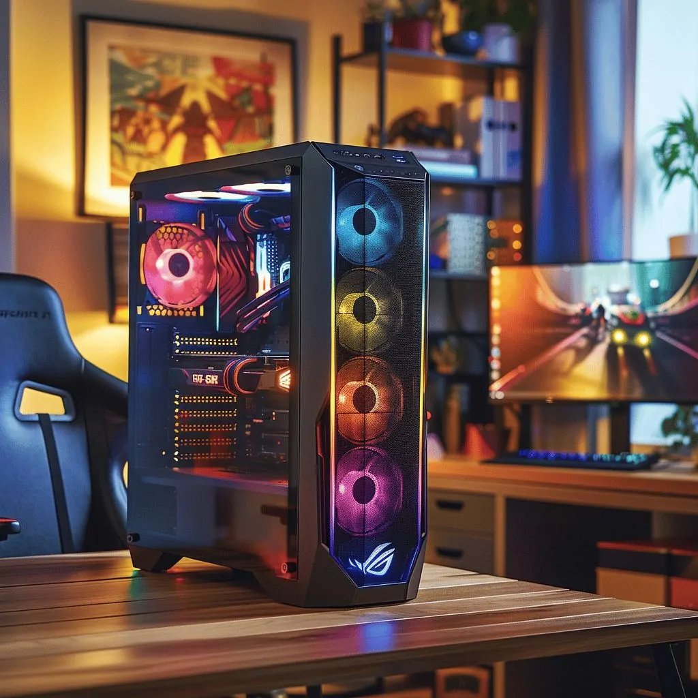

Jeux vidéo en multijoueur
J’adore jouer aux jeux vidéo en multijoueur comme Teamfight Tactics, Valorant ou encore League of Legends. Voici un petit classement de mes préférences :
- Teamfight Tactics
- League of Legends
- Valorant

Sport, associations et sorties
Je fais partie de deux associations de mon village :
- Les conscrits d’Agnin, dont j’ai été trésorier pendant un an.
- Le club de foot d’Agnin.
À part cela, j’aime bien faire la fête et sortir avec mes amis.